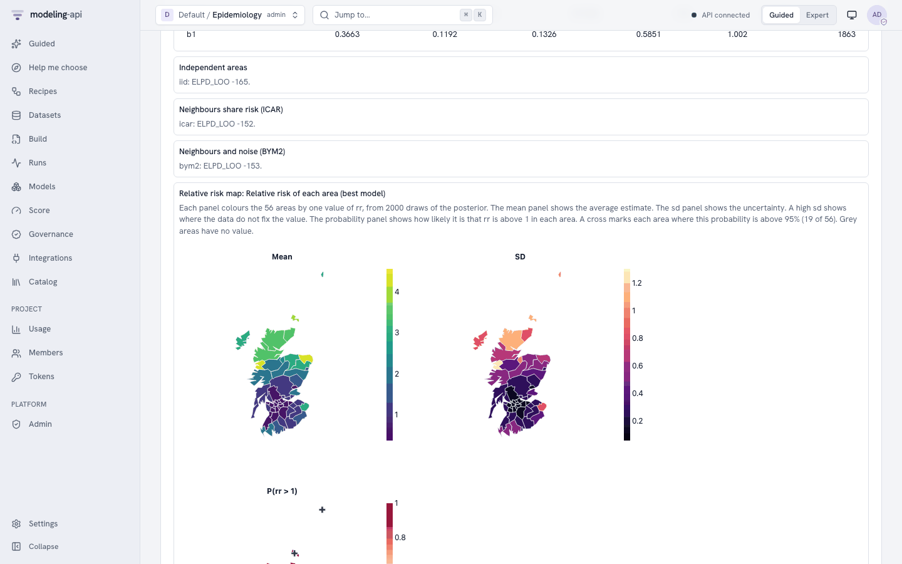
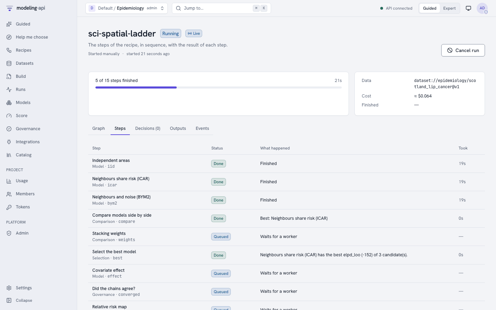

Complex workflows for Bayesian models¶
This tutorial shows how to build a workflow for Bayesian models in the workflow editor of the web app. The workflow fits more than one model, does checks of the fits, makes decisions and writes one report. You learn these patterns:
- A model ladder: fit model variants, compare them by
elpd_loo, weigh them by stacking and keep the best one. - A convergence gate: stop when the chains do not agree.
- A posterior predictive check.
- Governance checks: prior sensitivity and the recovery of known values.
- Calibrate, decide, then simulate with the fitted model.
- Plots in the run and in the report.
- Tree datasets in a workflow.
- Sub-workflows: use a saved workflow as one step.
Each pattern has a workflow document that you can paste into the editor. Each document is correct for the validation of the server. The examples use the science models of the pymc-challenges tutorials. The patterns are the same for all Bayesian models of the catalog.
You need:
- The platform, started with
make dev, and a project. You need the runner role to start a run. - A dataset for each example. To make the datasets, use the export helper (see
Get the data). The examples use these cases:
e18: lip cancer in Scotland.e51: a heated plate.e79: a map of the cosmic microwave background.e80: a strong lens.
- About one hour. Each workflow fits one to five models. With the default settings, one fit of these models takes from less than one minute to some minutes.
Ready-made recipes
Six gallery templates use these patterns. You can run them without the editor (see The six recipes). Use this tutorial when you want to change a recipe or make your own workflow.
1. The parts of the editor¶
Before you start, learn where each function is. The full description is in the workflows guide.
To make a workflow:
- Click Workflows in the sidebar (G then W).
- Click New workflow. The editor opens.
- In Editor view, click YAML.
- Paste a document from this tutorial. Change the
projectinmetadatato your project. - Click Canvas. The canvas shows the graph of the nodes.
- Click Tidy layout to put the nodes in order from left to right.
- Click Create workflow. Type a message in What changed (optional). Click Save.
The editor has three panes:
| Pane | What you do there |
|---|---|
| Nodes (the palette) | Type in Search nodes to find a node, for example stacking. Select the node to read its About card. Then drag it onto the canvas, or click Add. The nodes are in groups by kind: Model, Evaluation, Comparison, Selection, Decision, Governance, Report, Plot and Sub-workflow. |
| Canvas | Drag from an output port to an input port to connect two nodes. The canvas refuses a connection between ports of different types. To remove a node or an edge, select it and push Del. |
| Node editor | Select a node to edit it. The pane shows What it does, Node id, Label (optional), Inputs, Runs, Settings (or Decision for a branch) and How it runs. |
In the Settings of a node, each field has three sources:
- Value: a fixed value.
- Parameter: a workflow parameter. Each run can change it.
- Expression: a value that the server calculates from the results of earlier nodes.
To run a saved workflow:
- Click Run workflow. The dialog Run revision N opens.
- Under Data, select the dataset for each input. Select a version, or The latest version at run time.
- Under Parameters, change the values for this run if necessary.
- Click Start run. The run page opens.
The run page has the tabs Graph, Steps, Decisions, Outputs and Events. To open the drawer of a step, select the step. The drawer shows the Verdict, the Outputs, the Result fields, the Settings it ran with and the Logs of the step.
2. A model ladder¶
A model ladder fits the same model with more structure at each rung. Then it compares the
rungs by their expected log predictive density (elpd_loo, from PSIS-LOO). The notebook
equivalent is az.compare. This example fits three kinds of area effects of sci.areal_bym2
on the lip cancer data (e18).
apiVersion: mapi/v1
kind: Workflow
metadata: {name: lip-cancer-ladder, project: epidemiology}
params:
bind:
type: object
default: {dims: {area: district, area_: district_}, vars: {covariate: aff}}
description: The names of the area dims and of the covariate in your dataset
seed: {type: integer, default: 18, description: The random seed of each fit}
inputs:
data: {type: dataset, description: 'Counts, expected counts, a covariate and the map'}
nodes:
- id: iid
use: model.fit
label: Independent areas
inputs: {data: inputs.data}
with:
model: sci.areal_bym2@^1
bind: {$param: bind}
settings: {kind: iid}
fit: {mode: train_only, draws: 1000, tune: 1000, chains: 4, seed: {$param: seed}}
evaluate: {metrics: [elpd_loo]}
- id: icar
use: model.fit
label: Neighbours share risk (ICAR)
inputs: {data: inputs.data}
with:
model: sci.areal_bym2@^1
bind: {$param: bind}
settings: {kind: icar}
fit: {mode: train_only, draws: 1000, tune: 1000, chains: 4, seed: {$param: seed}}
evaluate: {metrics: [elpd_loo]}
- id: bym2
use: model.fit
label: Neighbours and noise (BYM2)
inputs: {data: inputs.data}
with:
model: sci.areal_bym2@^1
bind: {$param: bind}
settings: {kind: bym2}
fit: {mode: train_only, draws: 1000, tune: 1000, chains: 4, seed: {$param: seed}}
evaluate: {metrics: [elpd_loo]}
- id: compare
use: compare.models
inputs: {candidates: [iid.metrics, icar.metrics, bym2.metrics]}
with: {metric: elpd_loo, direction: max}
- id: weights
use: compare.stacking
inputs: {candidates: [iid.metrics, icar.metrics, bym2.metrics]}
- id: best
use: select.best
inputs: {table: compare.table, models: [iid.model, icar.model, bym2.model]}
with: {metric: elpd_loo, direction: max}
outputs: {model: best.model, comparison: compare.table, weights: weights.table}
What the nodes do:
- Each
model.fitnode hasevaluate: {metrics: [elpd_loo]}. The fit then keeps the elpd value of each data point.compare.stackingneeds these values. compare.modelsranks the rungs byelpd_loo.direction: maxmeans that a larger value is better.compare.stackinggives each rung a weight. A mix of the rungs with these weights gives the best leave-one-out predictions. If the weights are spread over two rungs, no rung is clearly best.select.bestgives the model version of the best rung on itsmodeloutput. Its result fieldselectedis the node id of the best rung, for examplebym2.
All rungs must use the same data points in the same order. Use the same bind and no split
on each rung.
To build the ladder on the canvas:
- In Search nodes, type
fit. Select Fit a model and click Add. - In the node editor, type
iidin Node id. - Under Inputs, select
inputs.datain Connect a source…. - Under Settings, select
sci.areal_bym2in Choose a model. - In
settings, type{"kind": "iid"}. Inevaluate, type{"metrics": ["elpd_loo"]}. - Do steps 1 to 5 again for
icarandbym2. - Add Compare models side by side. Connect the
metricsoutput of each fit to itscandidatesinput. Setmetrictoelpd_looanddirectiontomax. - Add Weigh models by their predictions. Connect the same three
metricsoutputs. - Add Select the best model. Connect
compare.tabletotableand the threemodeloutputs tomodels. Setmetrictoelpd_looanddirectiontomax.
After the run, open the Outputs tab. The comparison table shows elpd_loo of each rung.
The weights table shows the stacking weights and the pseudo-BMA+ weights. On the Steps
tab, the comparison and the selection name the rungs by their labels.
Note
compare.stacking gives pseudo-BMA weights from elpd and its standard error when the
pointwise values are not available. This occurs when the data has more than 10 000
points. Then the result field method is pseudo_bma_se, and note_plain tells you why.
3. A convergence gate¶
A convergence gate stops the workflow when the chains do not agree. The later checks have no
meaning without converged chains. model.summary gives R-hat, the bulk effective sample size
(ESS) and the divergences as result fields. branch.if reads them.
apiVersion: mapi/v1
kind: Workflow
metadata: {name: lip-cancer-gate, project: epidemiology}
params:
bind:
type: object
default: {dims: {area: district, area_: district_}, vars: {covariate: aff}}
max_rhat: {type: number, default: 1.01, description: The largest R-hat that passes}
min_ess: {type: number, default: 400, description: The smallest bulk ESS that passes}
inputs:
data: {type: dataset}
nodes:
- id: fit
use: model.fit
inputs: {data: inputs.data}
with:
model: sci.fisher_kpp@^1
bind: {$param: bind}
settings: {steps_per_hour: 10, delay: true}
fit: {draws: 1000, tune: 1000, chains: 4, seed: 50}
- id: s
use: model.summary
label: Parameters and convergence
inputs: {model: fit.model}
with: {vars: [b0, b1, sigma, rho], hdi_prob: 0.9}
- id: converged
use: branch.if
label: Did the chains agree?
with:
condition: >-
nodes.s.max_rhat < params.max_rhat and nodes.s.min_ess >= params.min_ess
and coalesce(nodes.s.n_divergent, 0) == 0
explain_then: The chains agree. The workflow did a test of the covariate effect.
explain_else: The chains do not agree. Fit with more warm-up steps, or change the model.
- id: effect
use: branch.if
label: Is the effect clear of zero?
when: converged.then
with:
condition: nodes.s.params.b1.hdi_low > 0 or nodes.s.params.b1.hdi_high < 0
explain_then: The 90% range of the covariate effect does not include zero.
explain_else: The 90% range of the covariate effect includes zero.
- id: map
use: plot.render
label: Relative risk map
when: effect.then
inputs: {model: fit.model}
with:
recipe: sci.area_map
source: model
settings: {var: rr, stats: [mean, exceedance], threshold: 1.0}
outputs: {model: fit.model, summary: s.table, map: map.plot}
How the conditions read the results:
nodes.s.max_rhatandnodes.s.min_essinclude all the values of the variables invars.nodes.s.n_divergentisnullwhen the model keeps no sampler statistics.coalescechangesnullto 0.nodes.s.params.b1.hdi_lowis the lower bound of the HDI of the scalarb1. For an element of a vector, write the name in brackets and quotes:nodes.s.params['beta[north]'].hdi_low.- A node on the arm that the branch does not take is skipped. It does not fail. A node
with
when: converged.thenis also skipped whenconvergedis skipped.
To write a condition in the editor:
- Add Choose a path and type
convergedin Node id. - Under Decision, select
nodes.s.max_rhatin Insert a result or parameter…. - Type the other part of the condition. The server does a check of the condition while you type. When it is correct, the editor shows "The condition is correct."
- Type the text for each arm in
explain_thenandexplain_else. The run report shows this text. - Select the
effectnode. Under Runs, select Only when converged says yes (then) in When it runs.
For help with the syntax, open How to write a condition below the condition. After the run, the Decisions tab shows the condition, the values that it read and the arm that it took. Open For experts: the condition to see the expression.
4. A posterior predictive check¶
evaluate.ppc simulates new data from the fitted model and compares it with the observed
data. It is the workflow equivalent of pm.sample_posterior_predictive and az.plot_ppc.
The node needs a model that gives draws and has the predict score mode.
This example uses the heated plate (sci.heat_plate, case e51). The check uses the maximum
temperature of each image as its statistic.
apiVersion: mapi/v1
kind: Workflow
metadata: {name: heat-plate-ppc, project: engineering}
inputs:
data: {type: dataset, description: Heater powers and the thermocouple readings}
nodes:
- id: fit
use: model.fit
inputs: {data: inputs.data}
with:
model: sci.heat_plate@^1
settings: {thickness_mm: 5.0, room_temperature: 20.0}
fit: {draws: 1000, tune: 1000, chains: 4, seed: 51}
- id: ppc
use: evaluate.ppc
label: Predictions against the data
inputs: {model: fit.model}
with: {statistic: max, n_draws: 400}
- id: agrees
use: branch.if
label: Does the model agree with the data?
with:
condition: nodes.ppc.ok
explain_then: The model makes data like the observed data.
explain_else: The model does not make data like the observed data. Look at the residual maps.
- id: residuals
use: plot.render
label: Residual maps
when: agrees.else
inputs: {model: fit.model}
with: {recipe: sci.image_residuals, source: predictions}
- id: grid
use: plot.render
label: Observed and predicted images
inputs: {model: fit.model}
with:
recipe: sci.ppc_image_grid
source: predictions
settings: {n_draws: 5, shuffle: true}
outputs: {ppc: ppc.metrics, residuals: residuals.plot, grid: grid.plot}
The result fields of evaluate.ppc:
| Field | Meaning |
|---|---|
coverage_50, coverage_90 |
The share of the observed values in the central 50% and 90% range of their simulated values |
pit_ks |
The distance of the PIT values from a uniform distribution (0 is best) |
p_values |
For each target, the predictive p-value of the statistic in statistic |
ok |
True when each coverage is near its level, the p-value is not extreme and pit_ks is small |
verdict_plain |
The verdict in plain words |
With shuffle: true, the grid of sci.ppc_image_grid hides which panel is the observed
image. The caption of the plot gives the answer. If you cannot find the observed image, the
model makes realistic images.
Note
The check uses the data that the model learned from. A model that is too flexible can
pass. To measure the accuracy on new data, use a holdout split and the evaluate metrics
of model.fit.
5. Governance checks¶
Two governance checks are important for Bayesian models:
sensitivity.priorfits the model again with wider and narrower priors. The key results must change very little. Then you know that they come from the data.recovery.simulatedsimulates datasets from the model with known values and fits the model again on each one. The 90% ranges must contain the known values about 90% of the time. This is a small version of simulation-based calibration (SBC).
Each check does more fits. Thus put them after the convergence gate.
The example uses sci.fisher_kpp and the scratch assay of E50
(python -m mapi_plugin_science.export e50). Both checks apply to this model:
sensitivity.priorchanges the settings whose names end with_sigma,prior_scaleorprior_sd. Here it changescapacity_sigma.recovery.simulatedneeds a model whose predictions are numbers. The cell counts are numbers.
The checks do not apply to all models. On sci.areal_bym2, the sensitivity check is
skipped, because its prior widths have other names. The recovery check applies to count
models and to sci.network_latent_space: it simulates each dataset from the posterior
predictive of the model, so the counts are whole numbers and a tie is 0 or 1. The latent
positions of the network model are known only to a rotation. To do the check on the other
parameters only, add params: [alpha, beta] to the params of the node (next to n_sims).
apiVersion: mapi/v1
kind: Workflow
metadata: {name: scratch-assay-governance, project: biology}
params:
bind:
type: object
default: {dims: {t: hours, x: position}, vars: {count: cells}}
n_sims: {type: integer, default: 20, minimum: 5, maximum: 100}
inputs:
data: {type: dataset}
nodes:
- id: fit
use: model.fit
inputs: {data: inputs.data}
with:
model: sci.fisher_kpp@^1
bind: {$param: bind}
settings: {steps_per_hour: 10, delay: true}
fit: {draws: 1000, tune: 1000, chains: 4, seed: 50}
- {id: s, use: model.summary, inputs: {model: fit.model}}
- id: converged
use: branch.if
with: {condition: "nodes.s.max_rhat < 1.01 and nodes.s.min_ess >= 400"}
- id: sensitivity
use: governance.check
label: Prior sensitivity
when: converged.then
inputs: {model: fit.model, data: inputs.data}
with:
check: sensitivity.prior
params: {scales: [0.5, 2.0]}
- id: recovery
use: governance.check
label: Recovery of known values
when: converged.then
inputs: {model: fit.model, data: inputs.data}
with:
check: recovery.simulated
params: {n_sims: {$param: n_sims}}
- id: trusted
use: branch.if
label: Can you trust the estimates?
when: converged.then
with:
condition: >-
nodes.sensitivity.status not in ['fail', 'error']
and nodes.recovery.status not in ['fail', 'error']
explain_then: The prior and recovery checks did not fail. Read their warnings.
explain_else: A check failed. Read its evidence before you use the estimates.
- id: estimates
use: plot.render
label: Estimates
when: trusted.then
inputs: {model: fit.model}
with: {recipe: core.posterior_forest, source: model}
- id: report
use: report.summary
inputs: {items: [s.table], model: fit.model, plots: [estimates.plot]}
with: {title: 'Scratch assay: governance checks'}
outputs: {sensitivity: sensitivity.evidence, recovery: recovery.evidence, report: report.report}
To add a check in the editor, add Run one governance check. Then select the check in
Choose a governance check. Type the parameters of the check in params. The
Governance page (Check catalog tab) shows the parameters and the limits of each check.
The result field status is pass, warn, fail, skipped or error. The value field
gives the measured value. The evidence output keeps the full result. A check that does not
apply to the model gives skipped.
Caution
Do not set n_sims high for a slow model. Each simulated dataset is a full fit. With
n_sims: 20, the recovery check fits the model 20 times.
6. Calibrate, decide, then simulate¶
model.score runs a score mode of a fitted model in the workflow: predict, simulate,
forecast or counterfactual. Its scores output is a dataset. A plot or a second model can
read it. This example calibrates the heated plate on the measured runs. If the calibration is
good, the workflow simulates the field of a new heater layout.
apiVersion: mapi/v1
kind: Workflow
metadata: {name: heat-plate-design, project: engineering}
params:
max_error: {type: number, default: 0.5, minimum: 0,
description: The largest RMSE in degC on the run held out}
inputs:
data: {type: dataset, description: The calibration runs}
layout: {type: dataset, required: false, description: The heater powers of the new layout}
nodes:
- id: holdout
use: split.holdout
inputs: {data: inputs.data}
with:
split: {kind: leave_group_out, dim: run, n: 1, seed: 51}
- id: fit
use: model.fit
label: Calibrate
inputs: {data: inputs.data, split: holdout.plan}
with:
model: sci.heat_plate@^1
settings: {thickness_mm: 5.0, room_temperature: 20.0}
fit: {mode: evaluate_then_refit, draws: 1000, tune: 1000, chains: 4, seed: 51}
evaluate: {metrics: [rmse, coverage_90]}
- id: plate
use: model.summary
inputs: {model: fit.model}
with: {vars: [k, h, h_edge, eta]}
- id: good
use: branch.if
label: Is the calibration good enough?
with:
condition: nodes.fit.metrics.rmse <= params.max_error and nodes.plate.max_rhat < 1.01
explain_then: The calibration predicted the held-out run within the limit.
explain_else: The calibration is not good enough. Add calibration runs or sensors.
- id: design
use: model.score
label: Simulate the new layout
when: good.then
inputs: {model: fit.model, data: [inputs.layout, inputs.data]}
with:
mode: simulate
request: {seed: 7}
- id: field
use: plot.render
label: Field of the layout
when: good.then
inputs: {data: design.scores}
with:
recipe: sci.field_map
source: data
settings: {var: field, frame: run, colormap: magma}
outputs: {model: fit.model, design: design.scores, field: field.plot}
Read these points:
data: [inputs.layout, inputs.data]is a list of alternatives. The node uses the first input that has a value. If you do not give a layout, the node simulates the calibration runs.- The decision comes before the simulation. The result fields of
model.scoreare onlymode,n_vars,groupandrepresentation. A condition cannot read the values of the simulated data. To make a decision on predictions, useevaluate.ppcor theevaluatemetrics ofmodel.fit. requesttakes the other fields of a score request:horizon,output,select,interventions,seedandfuture_covariates. For example, thesci_network_ladderrecipe simulates 500 networks withrequest: {output: {vars: [graph_stat], draws: 500}}andgroup: draws.- If the model cannot do the mode, the node fails with
CAPABILITY_UNSUPPORTED. The About card of each model lists its score modes.
To connect alternatives in the editor, select the design node. Under Inputs, connect
inputs.layout first. Then select inputs.data in
Add an alternative (used if the first is skipped)…. The canvas numbers the two edges
alt 1 and alt 2.
7. Plots in the run and in the report¶
plot.render draws a recipe of the plot catalog in the run. It
replaces the az.plot_* calls of a notebook. report.summary adds a plot section for each
plot on its plots input.
apiVersion: mapi/v1
kind: Workflow
metadata: {name: lip-cancer-report, project: epidemiology}
params:
bind:
type: object
default: {dims: {area: district, area_: district_}, vars: {covariate: aff}}
inputs:
data: {type: dataset}
nodes:
- id: fit
use: model.fit
inputs: {data: inputs.data}
with:
model: sci.fisher_kpp@^1
bind: {$param: bind}
settings: {steps_per_hour: 10, delay: true}
fit: {draws: 1000, tune: 1000, chains: 4, seed: 50}
- id: s
use: model.summary
inputs: {model: fit.model}
with: {vars: [b0, b1, sigma, rho]}
- id: map
use: plot.render
label: Relative risk map
inputs: {model: fit.model}
with:
recipe: sci.area_map
source: model
settings: {var: rr, stats: [mean, sd, exceedance], threshold: 1.0, mark_above: 0.95}
title: Relative risk of each district
- id: pair
use: plot.render
label: Pair plot
inputs: {model: fit.model}
on_failure: continue
with:
recipe: core.pair
source: model
settings: {var_names: [b1, sigma, rho]}
- id: graph
use: plot.render
label: Neighbours of each district
inputs: {data: inputs.data}
with: {recipe: net.graph, source: data, settings: {var: adjacency, panels: graph}}
- id: report
use: report.summary
inputs:
items: [s.table]
model: fit.model
plots: [map.plot, pair.plot, graph.plot]
with:
title: Lip cancer in Scotland
sections: [s, map, pair]
outputs: {map: map.plot, report: report.report}
Read these points:
sourcetells the node where to read the data.modelreads the posterior draws of the bundle.predictionsreads the in-sample predictions with the observed values.datareads the dataset on thedatainput.auto(the default) triesdata, thenmodel, thenpredictions.on_failure: continuelets the workflow continue when a plot cannot be drawn. The report then has no section for that plot.sectionsis a list of node ids. The report includes only these nodes. In this example the report has no section forgraph. If you do not setsections, the report includes all the nodes.- The validation finds an unknown recipe id. The recipe does a check of its
settingsonly when the node runs.
After the run, the Outputs tab shows each plot in the plot sandbox. The report output shows the plot sections with their captions. In the drawer of a plot step, Outputs shows the same plot.

Note
Only the JSON report and the run page of the web app show the plot sections. The HTML
report does not show them. A plot that is larger than 256 KB stays in the output of its
node, and the report section tells which node has it. A plot that is larger than 1 MiB
fails with PAYLOAD_TOO_LARGE. Use fewer draws, panels or frames in the settings of the
recipe.
8. Tree datasets in a workflow¶
A tree dataset has groups (nodes) with different dimensions. For example, a strong lens
tree keeps the image in /image and the point spread function (PSF) in /psf. Set nodes
and join on model.fit, as in the data block of a spec.
The e80 export is a flat dataset. Section 2.1 of the
E80 tutorial makes the tree file slacs_j1627_tree.nc
from the export, with lens_data.to_tree and write_export. Upload that file as one version.
The groups of the file become the nodes of the tree.
apiVersion: mapi/v1
kind: Workflow
metadata: {name: lens-tree, project: astronomy}
inputs:
data: {type: dataset, description: A tree with the image in /image and the PSF in /psf}
nodes:
- id: fit
use: model.fit
inputs: {data: inputs.data}
with:
model: sci.strong_lens@^1
nodes: {image: {path: /image}}
join: exact
settings: {pixel_scale: 0.05, psf_source: tree}
fit: {mode: train_only, draws: 500, tune: 500, chains: 4, seed: 80}
- id: residuals
use: plot.render
label: Residual maps
inputs: {model: fit.model, data: inputs.data}
with: {recipe: sci.image_residuals, source: predictions}
outputs: {model: fit.model, residuals: residuals.plot}
Read these points:
- The model reads the merged variables of the nodes in
nodes. A model that reads the tree, assci.strong_lenswithpsf_source: treedoes, also gets the whole tree. jointells how the coordinates of the selected nodes align:exact(the default),innerorouter.- If you do not set
nodes, the fit reads only the root node of the tree. model.score,model.forecastandplot.renderwithsource: predictionsselect the same nodes from a tree on theirdatainput. Withsource: data,plot.renderreads all the groups of the tree, for example the outlines forsci.area_map.model.backtestalso takesnodesandjoin.search.griddoes not.
The node editor has no special field for nodes. Type the object in the nodes field
under Settings, or edit the YAML.
Caution
Do not backtest a tree-input model that reads its target from the tree. A backtest gives the full tree to each fold. Thus the model can see the test window. The node shows a warning.
9. Sub-workflows¶
subworkflow.run runs a saved workflow as one step. Use it when several workflows need the
same sequence of steps. The outputs of the saved workflow become the output ports of the
node.
First, save the sci_image_model_check recipe as a workflow:
- Click Workflows, then the Templates tab.
- On the card Image model check (
sci_image_model_check), click Use this template. - Type
image-checkin Workflow name. - In the parameters step, type
sci.cmb_field@^1in Model. This value is only the default. The parent workflow gives its own value. - Do the last step of the wizard.
The saved workflow has the outputs model, report, summary and ppc. This parent
workflow runs it on two image models and puts the results in one report:
apiVersion: mapi/v1
kind: Workflow
metadata: {name: two-image-models, project: astronomy}
inputs:
cmb: {type: dataset, description: The masked temperature map (e79 export)}
lens: {type: dataset, description: The lens image (e80 export)}
nodes:
- id: cmb_check
use: subworkflow.run
label: Check the CMB model
inputs: {data: inputs.cmb}
with:
workflow: workflow://astronomy/image-check@r1
params:
model: sci.cmb_field@^1
var: sky
settings: {pixel_arcmin: 7.5, beam_fwhm_arcmin: 5.0, pixel_subsamples: 8,
pixel_window: true, projection: gnomonic, border: 8, field_draws: 40}
draws: 64
tune: 16
seed: 79
- id: lens_check
use: subworkflow.run
label: Check the lens model
inputs: {data: inputs.lens}
with:
workflow: workflow://astronomy/image-check@r1
params:
model: sci.strong_lens@^1
var: model_image
settings: {pixel_scale: 0.05, subsample: 2, lens_light_components: 2,
noise_correlation: 0.2, z_lens: 0.2076, z_source: 0.5241}
draws: 600
tune: 400
seed: 80
- id: report
use: report.summary
inputs:
items: [cmb_check.summary, lens_check.summary]
metrics: [cmb_check.ppc, lens_check.ppc]
with: {title: Two image models}
outputs: {report: report.report}
Read these points:
paramsgives the parameters of the saved workflow. Here,paramsoverrides the default ofmodel(sci.cmb_field@^1) that you typed in the wizard.- The values of
var,settings,draws,tuneandseedare the values of the E79 and E80 tutorials.varselects the output to check. The lens model has two outputs on a grid. With the defaults (1000 draws and 1000 warm-up steps), the CMB check takes about 25 times as long as the fit of the E79 tutorial. - Pin a revision (
@r1). Then a later edit of the saved workflow does not change the parent without notice.@latestis also possible. - Each sub-workflow runs as a separate workflow run with its own run page. When the server cancels the parent, it also cancels the children.
- Sub-workflows can go a maximum of 8 levels deep. A workflow that runs itself fails with
WORKFLOW_INVALID.
To add the node in the editor, add Run another workflow. Select image-check in
Choose a saved workflow. Select a revision, or Always the latest revision. The node
then shows the inputs and outputs of the saved workflow as its ports.
The six recipes¶
The gallery has six science recipes that use these patterns. In Guided mode, click Recipes in the sidebar, then Run on my data. In Expert mode, open the Templates tab of Workflows and click Use this template to edit a copy.
This is the monitor of a sci_spatial_ladder run on the dataset of the
E18 tutorial. All 15 steps took 46 s.

| Recipe (card title) | Model | What it does | Sections |
|---|---|---|---|
sci_spatial_ladder (Disease map: which spatial model?) |
sci.areal_bym2 |
Fits iid, ICAR and BYM2 area effects. Keeps the best one by elpd_loo. If the covariate effect is clear, it fits the best one again with wider and narrower priors. Draws sci.area_map. |
2, 3, 5, 7 |
sci_network_ladder (Network ties: which model?) |
sci.network_latent_space |
Fits pair covariates, then sociality, then a latent space. Keeps the best one. Draws net.graph. Simulates networks with model.score for a check of graph statistics. |
2, 6, 7 |
sci_phylo_signal (Trait regression across species, with and without the tree) |
sci.phylo_regression |
Fits no tree, Brownian motion, Pagel's lambda and Ornstein-Uhlenbeck. Decides if the slope of one predictor is clear of zero. Draws sci.phylogeny. |
2, 3, 4, 7 |
sci_calibrate_then_design (Calibrate a heated plate, then test a heater layout) |
sci.heat_plate |
Calibrates on the runs with one run held out. If the error and R-hat are small, it predicts a new heater layout and draws sci.field_map. |
3, 6, 7 |
bayes_workflow_audit (Bayesian workflow audit) |
any Bayesian model (model parameter) |
Prior predictive plot, convergence gate, posterior predictive check, prior sensitivity, recovery of known values, a pair plot and one verdict. | 3, 4, 5, 7 |
sci_image_model_check (Image model check) |
any image model (model parameter) |
Residual maps, a grid of observed and predicted images and a posterior predictive check. | 4, 7 |
The recipes bayes_workflow_audit and sci_image_model_check need the parameter model.
Run on my data asks for it. Type a model reference, for example sci.cmb_field@^1. Type
the settings of the model in Settings under Fine-tune (optional: the defaults are
correct for most data).
Next steps¶
- The workflow node reference gives all the parameters and result fields of each node.
- The workflows guide tells how to run workflows from the CLI and the Python client, and how to add schedules and triggers.
- The pymc-challenges tutorials show each science model from the data to the result.